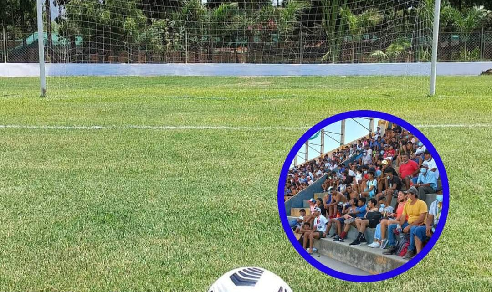

"No habrá fútbol este fin de semana"
El día jueves 25 de abril hubo reunión de delegados de los equipos participantes en Primera División para elegir a los nuevos integrantes de la Comisión de Justicia, los elegidos fueron: Karlo Severino Jimenez, Gerardo Perez Perales y Victor Adrianzen Gamarra
El día Lunes 29 de abril será la juramentación de la Comisión de Justicia.
Por lo tanto quedaría postergada la Fecha 09 para la próxima semana.